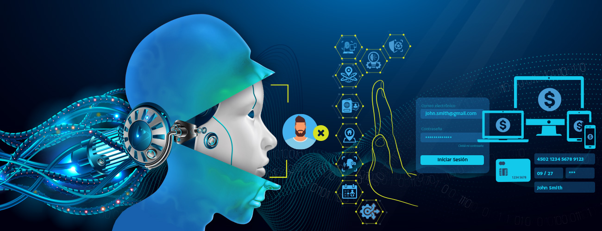

De regreso a noticias y artículos


Combate el fraude impulsado por la inteligencia artificial con defensas de múltiples capas.
El panorama digital está en constante cambio. Con los avances rápidos en inteligencia artificial y aprendizaje automático, el mundo ha presenciado un aumento sin precedentes en amenazas cibernéticas sofisticadas. El proceso para que los estafadores creen pruebas de identidad deepfake, bots astutos y voz artificial hasta avatares de video se está volviendo más fácil que nunca.
El informe del estado de la mitigación de bots en 2023 revela que el 89% de las empresas a nivel global creen que el fraude impulsado por la inteligencia artificial amenazará a su organización en los próximos 12 meses. A medida que los estafadores emplean la IA para mejorar sus tácticas engañosas, se vuelve crucial que las empresas y organizaciones refuercen sus mecanismos de prevención de fraudes. Una estrategia poderosa para gestionar este desafío en constante evolución es la adopción de defensas de múltiples capas.
La imperiosa necesidad del KYC perpetuo
El Conoce a Tu Cliente (KYC) ya no es un proceso único. La dinámica digital en constante cambio exige un enfoque KYC continuo o perpetuo. El objetivo es sencillo pero profundo: mantener un perfil actualizado de cada cliente a lo largo de su ciclo de vida. Este método asegura que cualquier actividad inusual, que inicialmente podría parecer insignificante, no pase desapercibida. Un sistema perpetuo de este tipo puede detectar discrepancias que surgen de perfiles falsos generados por IA, garantizando que solo usuarios genuinos accedan a plataformas y procesen transacciones digitales.
KYC de múltiples capas: un escudo contra deepfakes y bots
La sofisticación del fraude impulsado por la inteligencia artificial ha quebrantado fronteras que antes se consideraban invulnerables. Los deepfakes, por ejemplo, pueden crear videos realistas de personas reales diciendo o haciendo cosas que nunca hicieron. Con su creciente inteligencia, los bots pueden imitar el comportamiento humano hasta un grado preocupante.
Dadas estas desafiantes circunstancias, un proceso de KYC de múltiples capas se vuelve indispensable. Dicha estructura no se basa únicamente en comprobaciones estáticas de datos. En cambio, enfatiza modelos de autenticación como el video en vivo, donde los usuarios deben demostrar su autenticidad en tiempo real mediante códigos PIN o respuestas basadas en conocimientos. Además, se lleva a cabo un KYC en segundo plano en cuanto a huella digital del dispositivo, ubicación y dirección IP para acompañar las transacciones con verificaciones del tipo de pago para el emisor de la tarjeta y datos de nivel/tipo de tarjeta en la inteligencia blockchain. Estos protocolos de seguridad rigurosos garantizan que solo se verifiquen y procesen las transacciones de individuos vivos y genuinos.
Aprovechando un motor de riesgo avanzado
La detección de fraudes no se trata solo de identificar acciones sospechosas, sino de predecirlas. Aquí es donde entra en juego un motor de riesgo avanzado. Al aprovechar miles de parámetros y numerosas configuraciones, estos motores pueden discernir incluso los patrones de fraude más ocultos.
Al asociarse con un proveedor de datos y riesgos completo como AcuityTec, las empresas pueden establecer umbrales de riesgo personalizados adaptados a su industria y demografía específicas. Por ejemplo, una transacción de alto valor desde una región con históricamente bajos volúmenes de transacción podría generar una alerta. Las reglas de riesgo relacionadas con la huella digital del dispositivo o la evasión de la ubicación geográfica activarían el riesgo. Las empresas pueden establecer innumerables algoritmos de reglas de riesgo avanzadas para respaldar los recorridos de los clientes y configurarlos para regiones específicas, métodos de pago, tendencias y más.
Estos motores pueden ser estáticos o, como el de AcuityTec, aprovechar reglas de riesgo estáticas respaldadas por aprendizaje automático que aprenden continuamente de los datos históricos. Al detectar patrones, analizar comportamientos y comprender tendencias, esta tecnología asegura que los mecanismos de prevención de fraudes se mantengan adaptables a amenazas nuevas y emergentes.
Aprendizaje automático: el pilar de la prevención de fraudes adaptativo
El aprendizaje automático es una herramienta transformadora en el arsenal contra las amenazas cibernéticas. Puede identificar inconsistencias que podrían pasar desapercibidas en verificaciones manuales al analizar vastos conjuntos de datos. Lo más importante es que los algoritmos de aprendizaje automático pueden adaptarse a medida que surgen nuevas tácticas fraudulentas, asegurando que sigan siendo efectivos en este juego de gato y ratón interminable.
Consideremos un escenario en el que un estafador emplea una nueva técnica para eludir las verificaciones de autenticación tradicionales. Al encontrarse con esta novedad, un sistema impulsado por el aprendizaje automático analizaría el patrón y lo correlacionaría con otros puntos de datos y la puntuación de riesgo generada para clasificarlo como fraude. El sistema puede adaptarse rápidamente y señalar tales intentos en el futuro, lo que hace que el mecanismo de defensa sea completamente automatizado y siempre en evolución. Las empresas están empoderadas con confianza y compromisos de clientes confiables al mismo tiempo que se mantienen ágiles en la defensa contra el fraude, independientemente de nuestra evolución en línea.
Asociándose con proveedores de defensa integral contra el fraude
La colaboración es un arma potente contra el fraude. Visiones fragmentadas del riesgo permiten que los estafadores se cuelen. Cuando te asocias con un proveedor de datos y riesgos completamente equipado como AcuityTec, no solo obtienes todos los servicios de KYC que necesitas, sino todo lo necesario para realizar algoritmos de riesgo avanzados, incluso defensas adaptativas basadas en aprendizaje automático y, lo más importante, una visión armonizada del riesgo y la generación de informes. Una perspectiva así es invaluable para garantizar que no haya señales de alerta no detectadas.
Además, estos proveedores aportan automatización a la mesa, mejorando significativamente la velocidad y eficiencia en la detección de fraudes. El monitoreo de transacciones en tiempo real asegura que cualquier actividad sospechosa se señale de inmediato, permitiendo intervenciones oportunas antes del procesamiento y la pérdida de fondos. Esta agilidad es esencial en la era digital, donde cada segundo puede marcar la diferencia entre un intento de fraude exitoso y su prevención oportuna.
En conclusion
El fraude impulsado por la inteligencia artificial es un adversario formidable. Sin embargo, con una estrategia de defensa sólida y de múltiples capas, las empresas pueden defenderse contra las amenazas actuales y adaptarse a los desafíos futuros. Las herramientas están disponibles, desde el KYC perpetuo hasta los motores de riesgo avanzados y las perspicacias del aprendizaje automático. Con proveedores como AcuityTec, es una única API para garantizar un ecosistema digital seguro y confiable.
Acerca de AcuityTec
AcuityTec es un proveedor líder especializado en KYC global, KYB, cumplimiento y defensa avanzada contra fraudes con monitoreo en tiempo real, todo a través de una única API. Desde la incorporación hasta la verificación y monitoreo de transacciones, personalice su mitigación de riesgos de principio a fin para una protección contra fraudes incomparable, asegurando a los clientes y protegiendo los ingresos.
Para más información, Reserve una demostración o contacte a un representante de ventas en sales@acuitytec.com hoy.